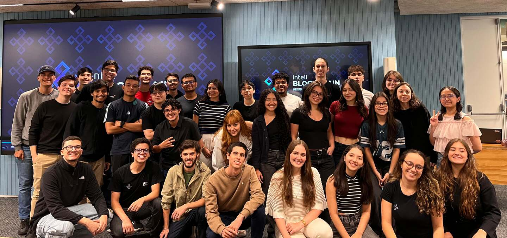
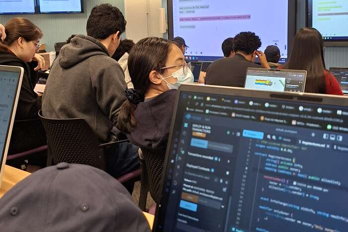
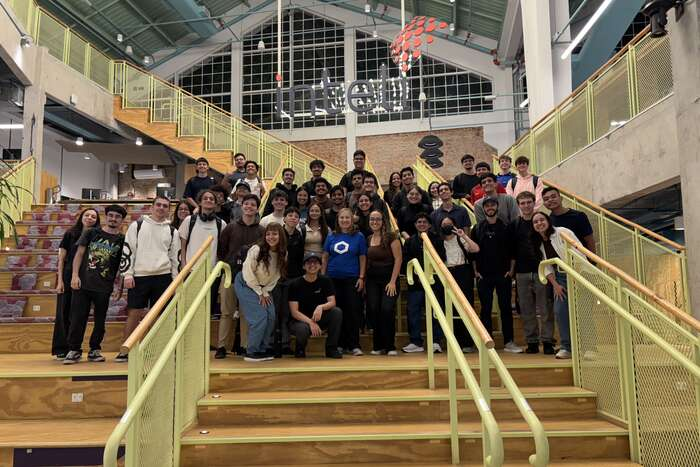
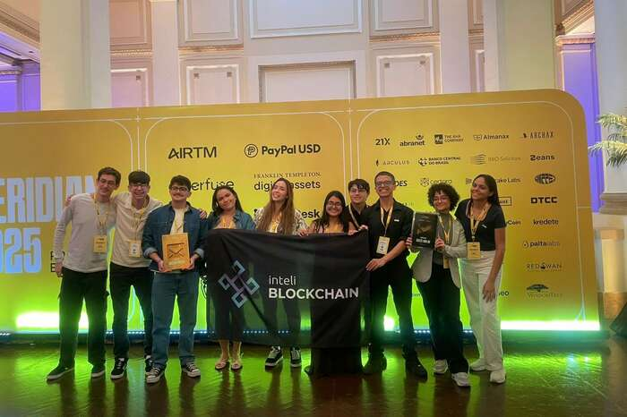
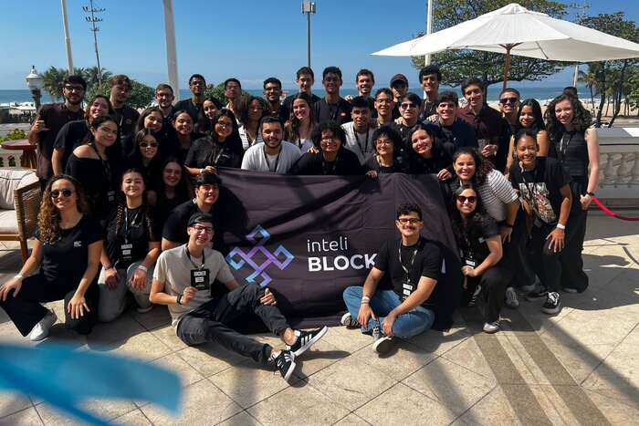

Liga estudantil de blockchain · Inteli · São Paulo · desde 2022
inteli Blockchain
O clube universitário que o ecossistema web3 chama.
Ver os 25 projetos
Quem constrói
Universitários que entregam
O clube é feito de alunos do Inteli que constroem de verdade — em competição e em casa. Desde 2022 são 25 projetos entregues, rodando em Stellar, Solana, Bitcoin, Celo e Chiliz, ao lado de Ethereum Brasil, Chainlink Labs e Starknet Foundation. As duas frentes se alimentam: o que a gente aprende no hackathon volta para o ciclo interno, e o que amadurece internamente chega mais pronto na próxima competição.
Em competição
Hackathons
Os membros competem em hackathons no Brasil e fora dele — ETHSamba, Meridian da Stellar, ETH Belgrade, entre outros. O que nasce em três dias de maratona fica aberto no GitHub depois, não morre com a premiação.
Dentro do clube
Projetos internos
Em paralelo rodam os projetos do próprio clube, com termo de abertura, ciclo de um mês e acompanhamento semanal. É de onde saem o programa de formação e o material aberto que a gente publica.
Com parceiro
Onde o clube tem parceria
Hoje é um projeto — o resto do que o clube constrói nasce em hackathon ou dentro de casa.

Projeto Alphractal
Sistema de monitoramento em tempo real de custos de taxa na rede Ethereum — projeto do Inteli Blockchain com a Alphractal.
Ver no GitHub →Quer construir com o clube? blockchain@inteli.edu.br
Entregas
Feito em hackathon
Doze dos vinte e cinco, em seis redes diferentes. Todos com código aberto e link direto para o repositório.
ETHSamba
DeVolt
Marketplace descentralizado que conecta produtores e consumidores de energia, com negociação direta e melhor aproveitamento de fontes renováveis.
GitHub →Sustentabilidade
CarbonTracker
IoT e blockchain para monitorar emissões de carbono e tornar a compensação transparente e auditável.
GitHub →Stellar · Meridian
4Bridge
Une filantropia, DeFi e liquidez para apoiar causas com rendimento transparente, sem travar o capital de quem doa.
GitHub →Solana
Cronia
Protocolo de crédito e pagamentos que converte cripto em linhas de crédito instantâneas para consumidores e lojistas.
GitHub →Bitcoin · Lightning
BTContract
Simplifica contratos financeiros na rede Bitcoin, com interface direta e suporte à Lightning Network.
GitHub →Celo
SmartTrans
Bilhetagem digital para transporte público com blockchain, IoT e validação por NFC integrados à rede Celo.
GitHub →Chiliz
trbe
Transforma engajamento de torcida em reputação on-chain, com recompensas gamificadas para o torcedor.
GitHub →Identidade
SkillPass
Valida habilidades profissionais com NFTs intransferíveis e staking de reputação feito pela própria comunidade.
GitHub →Agentes de IA
SpyNet
Infraestrutura de pagamentos para economias de agentes de IA, com micropagamentos cripto de alta frequência.
GitHub →Lumx
PólenChain
Liga doadores, ONGs e empresas com transparência de ponta a ponta e recompensas em NFT resgatáveis em parceiros.
GitHub →Programa do clube
High Block
Programa de desenvolvimento Web3 com desafios práticos, voltado a formar builders dentro do Inteli.
Ver o programa →Documentação
Docs³
Site público com documentação e tutoriais do clube: Foundry, carteira, faucet e o primeiro contrato.
Abrir o Docs³ →O ritmo
A disciplina por trás
Nada disso sai de improviso. São duas cadências fixas, que rodam desde 2022 e não se atropelam.
Toda semana
Aula interna
Conduzida pela área Educacional e aberta a todos os membros. Tokenização, DAO, redes blockchain e DeFi — cada tema com material e dicionário próprios, publicados no repositório aberto do clube.
Todo mês
Ciclo de projeto
Cada projeto abre com um termo de abertura, roda em ciclo de um mês e tem acompanhamento semanal. O que sai daí vai para o GitHub da organização, não para a gaveta.
Estrutura
Organizados para construir comunidade
Quatro áreas, e nenhuma delas entrega sozinha. Juntas cobrem os lados de que uma comunidade web3 precisa para se sustentar: quem ensina, quem constrói, quem comunica e quem cuida das pessoas.
Educacional
Aulas internas, dicionário, trilhas e todo o material de estudo do clube.
Projetos
Os projetos técnicos, do MVP à entrega, com acompanhamento semanal.
Marketing
Presença pública, conteúdo e as redes sociais do Inteli Blockchain.
Pessoas
Processo seletivo, PDI, acompanhamento e cultura dos membros.
Números
Onde o clube chegou
Histórico
De 2022 até agora
- Fundação do clube
- Ethereum SP
- DEVCON VI
- Workshop Web3
- Workshop preparatório
- Inteli Blockchain Challenge
- Processo seletivo
- Starknet Basecamp
- 1º Bitcoin Students Day
- Tokennation
- Lançamento do Docs³
- Meridian da Stellar
- 1º Workshop ZK
Registro
O clube em foto




Rede